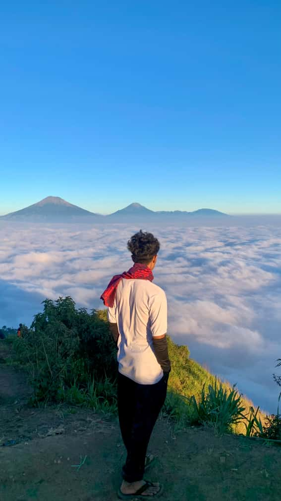

Profil Saya

- Nama: Dimas syifa maulana
- TTL: Pemalang, 16 Juni 2005
- NIM: 25103041052
- Program Studi: Teknik Informatika
- Universitas: Wahid Hasyim Semarang
- Minat: cyber security dan AI
- Hobi:Bermain game, ngoding, nonton film, dengerin musik, hiking
- Instagram: @dimassyf_m